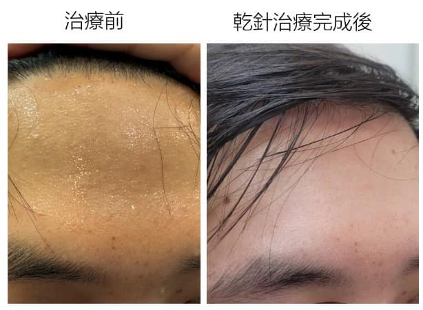

#蛋頭汗出🧑🦲
#蛋頭汗出🧑🦲
出汗，是中醫診療評估中非常重要的項目之一，代表著人體水津輸佈、循環是否正常的標誌，也反映體內氣機升降出入是否順暢。
中醫的經典《傷寒論》中，對於汗症的描述條文就多達10多條，涉及“但頭汗出”、“但頭微汗出”、“頭汗出”、“額上微汗出”、“額上生汗”等多種描述。
其中， 「但頭汗出」指只有頭部以上出汗，但頭部以下卻不流汗。中醫觀點多認為是樞機不利，鬱熱上蒸所致。
然而從解剖學、肌筋膜的角度來切入，斜方肌作為為上背部最大肌群，具有出汗調節體溫的重要功能，若斜方肌失能造成筋膜肌纖維的生理功能異常，則可能出現「後背不出汗、只有頭部流汗」的症狀。
這天的門診，真的出現了「但頭汗出」十餘年的年輕男性，在東門中醫林院長帶領的聯合門診處治後，靜坐久候20分鐘，額頭清爽無汗，立即得到改善，捷克真的太神奇啦！！
留言處詳見全文唷！
中醫師 黃彥鈞 太初中醫診所
肌筋膜脈學中醫應用
